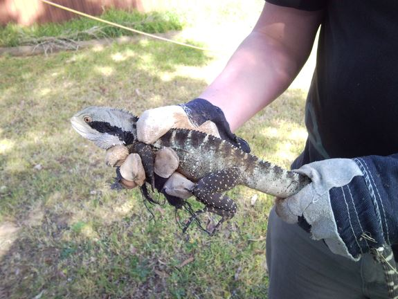

Australian Water Dragons can be captured early in the morning or in the evening when they are less active. While resting or sleeping Water Dragons can be captured from their elevated perch or when sitting in the water. During the animals active hours, keepers will have to be quick and attempt to reduce the chances of the animal fleeing and injuring itself. When keeping Water Dragons outdoors, capturing should only take place on days of low to moderate temperature to prevent the animals succumbing to hyperthermia.
60x30 cm cotton catching bags can be used to catch adult Water Dragons. Smaller bags can be used to transport smaller dragons and in the case of hatchlings; plastic containers are suitable. A suitable way of securing the catching bag is to twist the opening together and fold over the end and secure with a rubber band. Bags should not be wetted for transport.
Water Dragons can inflict deep wounds through biting and clawing. Strong gardening gloves should be worn on at least one hand when restraining Water Dragons unless the animal is well adjusted to handling. To restrain a Water Dragon, grip the animal firmly by the back of the neck and base of the tail (see image 15). Resting the body of the Water Dragon on the keepers arm or other part of the body will most likely result in lacerations. Do not grab the dragon by the tail as this can damage the animals spine and ligaments (Goulding and Green 2006), Water Dragons can also loose part of their tail if it is damaged (Rankin in Anonymous 1976:22).
The sharpness of the claws and power in the limbs are much more similar to those of a similarly sized varanid lizard than that of other large agamids. Keepers should show caution with all individuals but also attempt to condition Water Dragons to be handled in order to make husbandry procedures easier. Water Dragons are easiest caught when the animals are submerged underwater as they will attempt to remain unseen. If restraining an animal on branches or on land, all but the most calm of dragons will most likely attempt to run or jump from the branches.
If bitten by a Water Dragon, place the animal on the floor or bench and tap it on the hind leg or tail, the lizard will release its grip to bite the new threat to its hindquarters (Goulding and Green 2006).
Once inside the bag the animal can be weighed on either a platform (digital) scale or spring balance scale. Once released the bag should be weighed and this number should be deducted from the total to establish the weight of the animal. Weighing should be done every 1-2 months and more frequently for animals with health complications.
A simple way to examine a Water Dragon that is restrained in a capture bag is to use a secure fixed object such as a bench or top of the enclosure to support the weight of the bagged animal. Locate and hold the head from the outside of the bag and with the other hand reach inside and securely hold the animal from the back of the head. Once the neck is firmly gripped the head can be released from the outside and the bag can then be gently peeled back to expose the animal for examination. By securing the base of the tail the animal can be rotated and examined on both dorsal and ventral surfaces.
The method described above for removing a Water Dragon from the bag should be followed. When releasing Water Dragons, they will most likely run at high speed away from the people. It is best to ‘aim’ the animal away from fixed objects and barriers so they don’t run straight into them when they are released. It is a good idea to release Water Dragons within sight of the exhibit water feature or hide which will allow the animal to conceal itself. Do not place the Dragon on an elevated branch, since they will almost always jump (or fall) off to hide at the ground level anyway. One strategy described by Goulding and Green (2006) to condition Water Dragons to being handled and restrained is to place the animal on the enclosure floor while still holding it. Wait until the Dragon has relaxed and then release it, the animal will then learn that if it relaxes and stops struggling that it will be released.
When it is necessary to transport a Water Dragon, the time the animal is confined should be kept to a minimum. Road transport should only be used as long as the temperature inside the vehicle can be controlled and the journey is not too long.
The preferred method of transport in between capital cities and regional areas is overnight air services. The International Air Transport Authority (IATA) outlines regulations for transporting live animals by air, The regulations for the transport of all Lizards and Tuatara are outlined in Container Note 41 (Appendix 1) and should be followed for air transport of Water Dragons (Anonymous 2009:225-8).
Boxes should be clearly marked indicating that they contain a live animal. The address details of the sender and recipient should be clearly visible, emergency phone numbers should also be displayed. Instructions on the outside of the box should also say “KEEP OUT OF SUN” to avoid hyperthermia. There should also be an obvious “THIS WAY UP” label so that the box is transported correctly.

Boxes should be built of solid material which allows adequate ventilation and can be securely closed. The size of the box depends on the number of animals being transported and the size of the animal(s). A box designed to transport two adult Water Dragons should be at least 600mm long X 400mm wide X 200mm high. During transport, boxes often will be placed directly next to other boxes and or the side of the vehicle compartment, a 10mm spacer bar made of wood or other material should be built into the transport box in to ensure that ventilation holes on the side of the box are not blocked (see Figure 2).
A single animal should be placed in a cotton or other well-ventilated bag, secured with a rubber band and placed in the box. The animal should not be in contact with any other object than the bag, however shredded paper should be placed around the bagged animal to avoid injury during transport.
Water Dragons should not be fed during or on the same day of transport, but may be fed the day before transport (Goulding & Green 2006). The animals intended for transport should be adequately hydrated before transport, this is fairly easy with Water Dragons as they are often caught while sitting or hiding in the water. Placing the animal in a shallow dish of water for ten minutes prior to transport is recommended if the animal has not been recently in water (Goulding & Green 2006).
Multiple animals can be transported in the same box provided that the box is of suitable size and that the animals are individually bagged. Although the IATA regulations do not specify the genus Physignathus or Intellagama as a group of lizards requiring individual transport (Anonymous 2009:226), species of this genus can become aggressive to others of the same species, especially smaller individuals, therefore single bagging is recommended. A box designed to transport two adult Water Dragons should be at least 500mm long X 400mm wide X 200mm high. Transportation of young Water Dragons can be carried out using polystyrene packages in a multi-compartment container arrangement outlined on page 228 of the IATA regulations.
Reptiles should not be transported during periods of excessively high or low temperatures. Nor should they be transported when higher than average delays are expected such as problems with couriers (Goulding and Green 2006). A transport plan should be developed before transporting the animal. Time confined in the transport box should be kept to a minimum.
Once the box has been opened, the welfare of the animal should be established and this is a good opportunity to weigh the new animal (Goulding and Green 2006), unless it is indicated that it was weighed before transport. The animal can then be removed from the bag, but simply putting your hand in the bag when releasing any recently transported reptile is asking for trouble. Water Dragons can be released from the bag using in the method described in section 7.4 above.